Inmobiliaria en Rubí: casas, pisos y terrenos en venta
Casas, pisos y terrenos en Rubí, con el equipo de D&Habitat. Tasación gratuita sin visitas y asesoramiento hipotecario.

19 inmueblesen nuestra cartera de Rubí
Desde 220.000 €pisos libres, hasta 230.000 €
Casas desde 219.000 €hasta 598.000 €
Cartera en Rubí
Inmuebles en venta en Rubí
Can Mir · 3Can Sola · 3Castellnou · 3Can Oriol · 2Sant Muç · 2Castellnou - Vallès Park · 1Els Avets · 1Els Avets - Can Serrafossà - Ximelis · 1


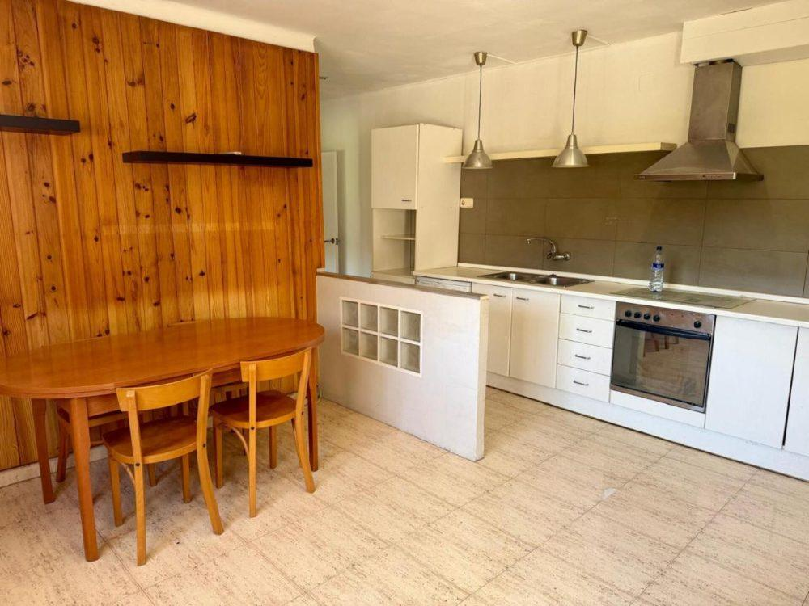

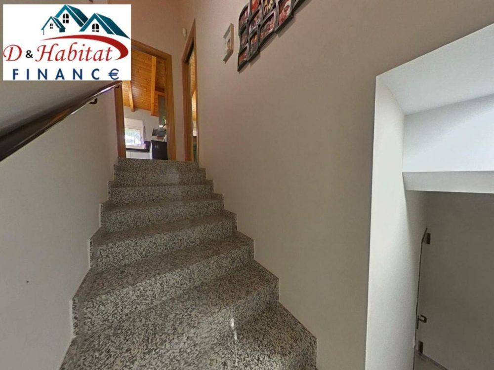
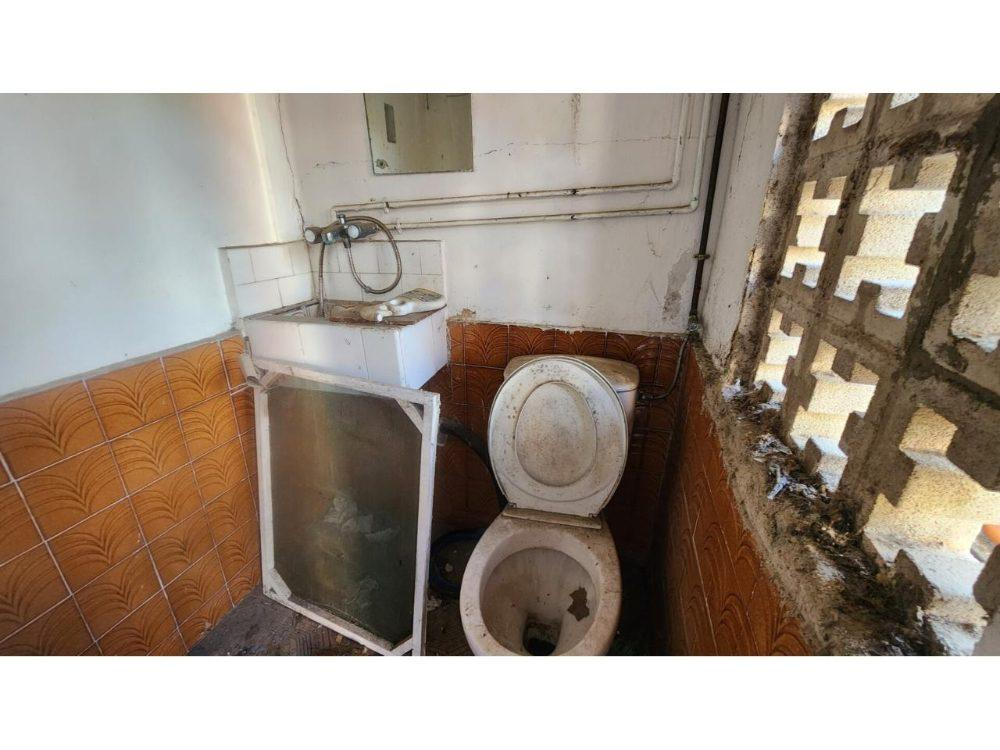
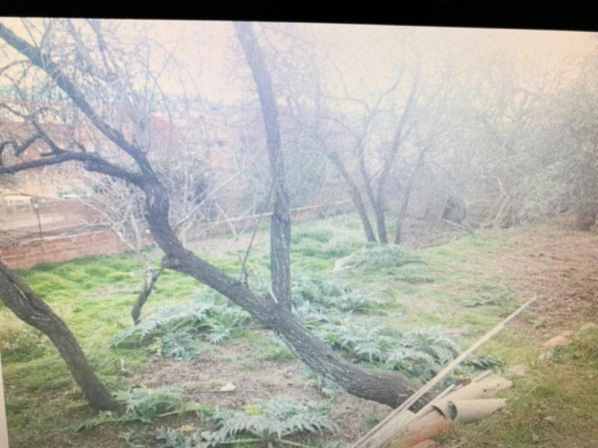
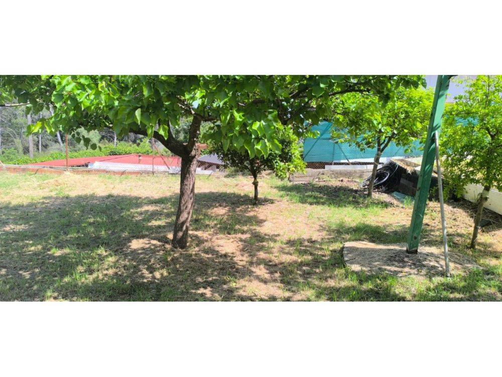
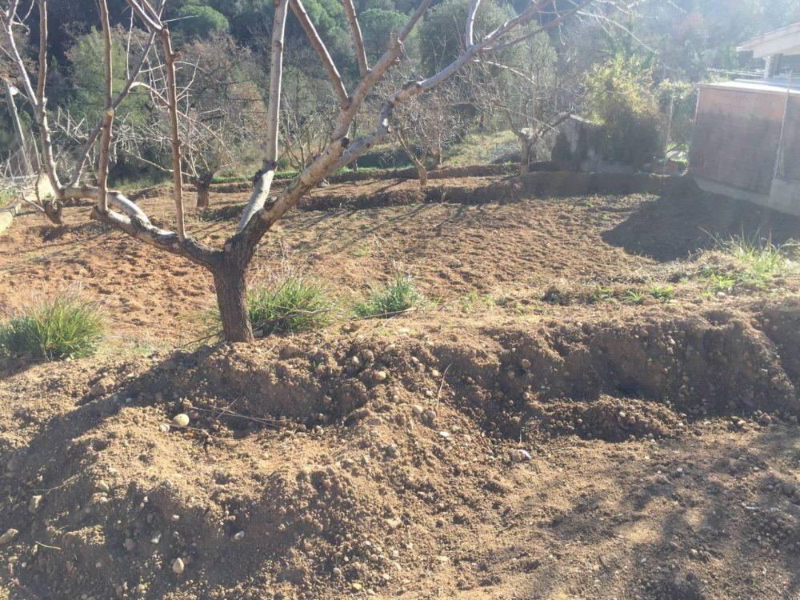
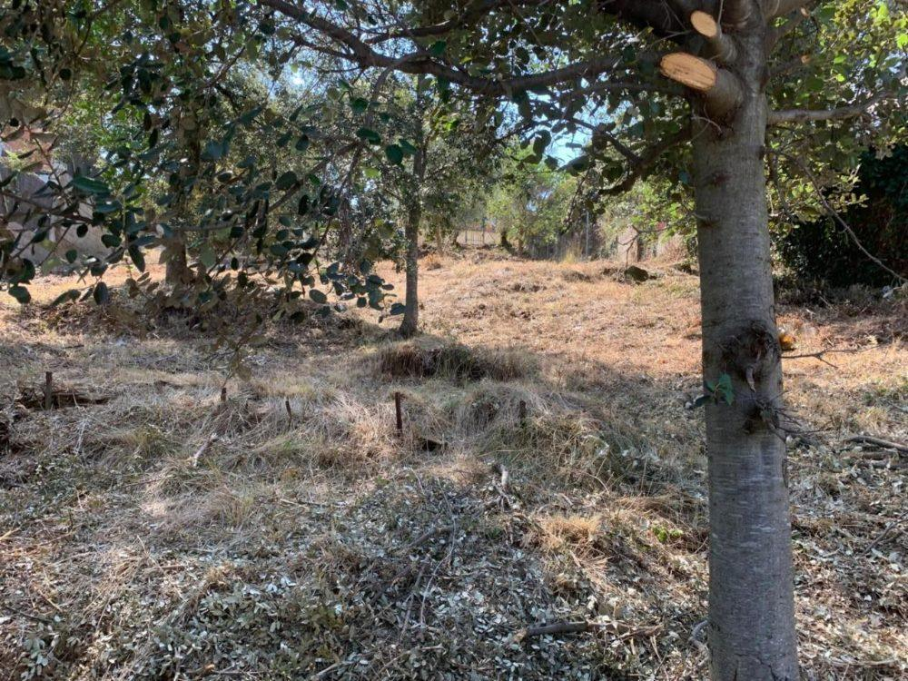
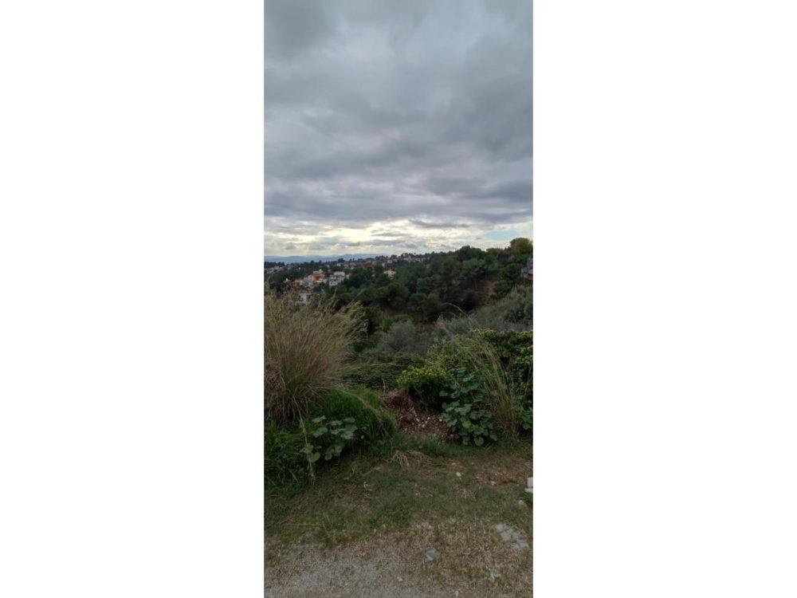
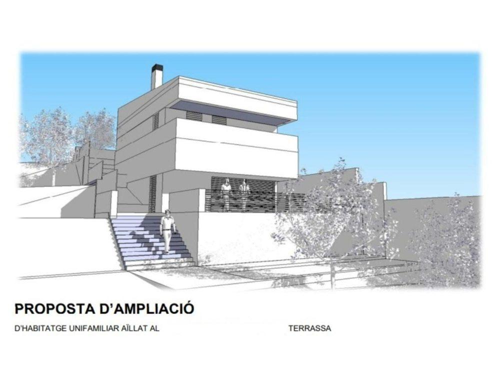
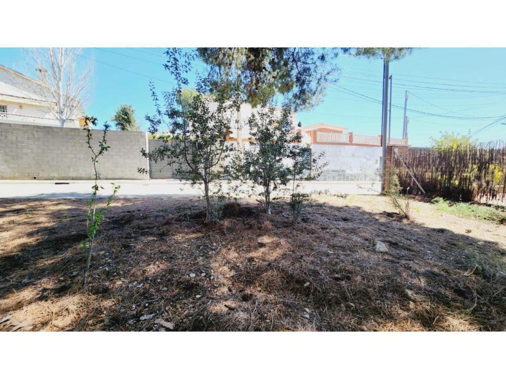
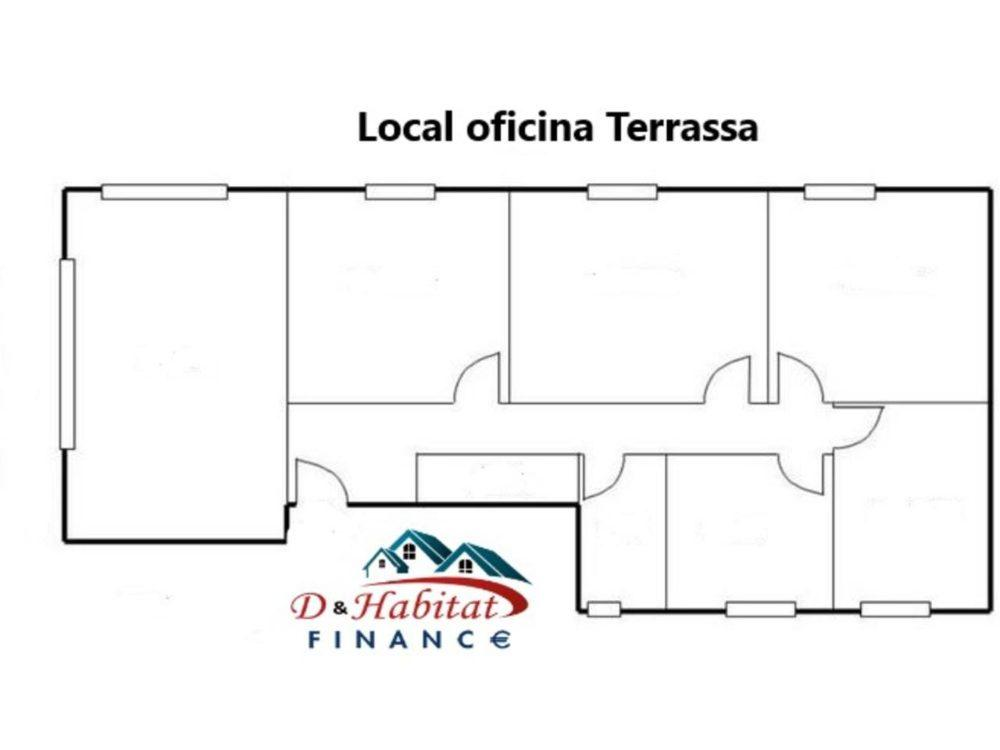

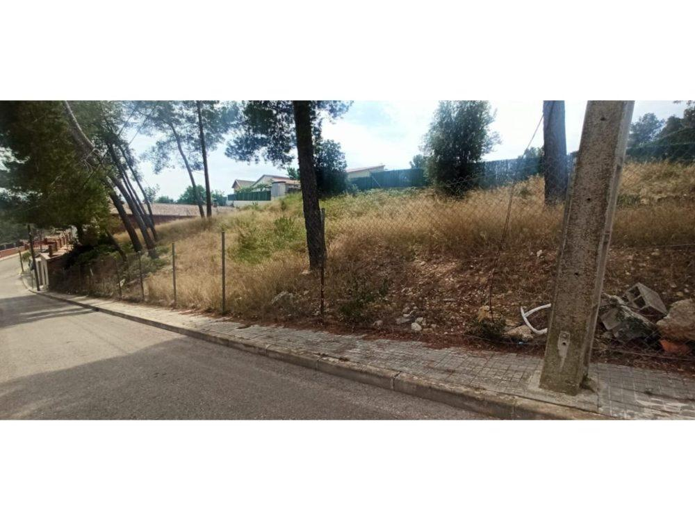
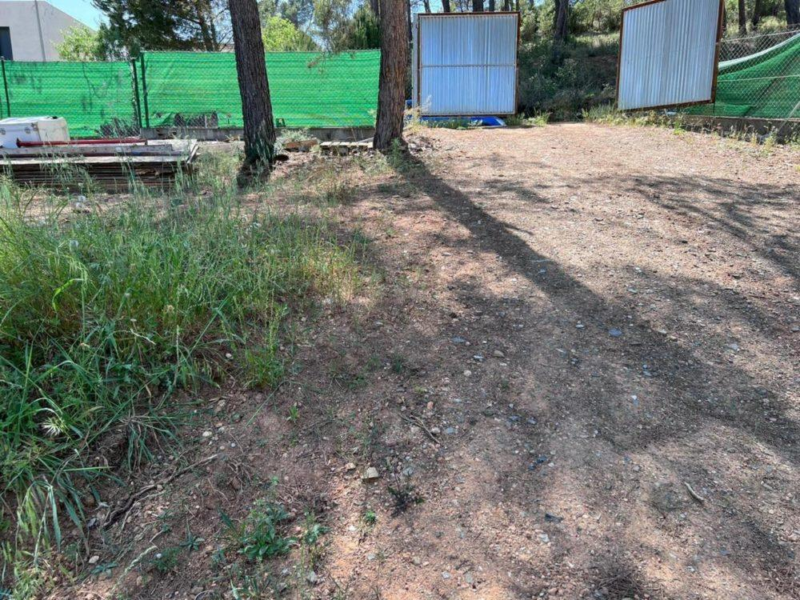
Comprar y vender en Rubí
En Rubí tenemos casas desde 219.000 €, pisos de 66 a 100 m² y una amplia oferta de terrenos edificables desde 50.000 € en urbanizaciones como Can Sola, Can Mir y Castellnou. Varias de estas parcelas pertenecen a Rubí pero lindan por el frente con Terrassa, con parada de autobús cerca.
Els Avets reúne casas adosadas reformadas y pisos amplios en una zona residencial tranquila. Sant Muç ofrece propiedades con mucho espacio, y Can Oriol, terrenos urbanos dentro del núcleo urbano, con servicios, comercios y transporte cerca.
El equipo de la oficina central de Terrassa trabaja habitualmente en Rubí y todas nuestras oficinas comparten la misma cartera de inmuebles.
Opiniones de clientes
Lo que dicen quienes ya han vendido con nosotros
4,9 ★ en 321 opiniones de Google. Léelas en Google Maps
«La mejor solución inmobiliaria en todo el Vallès.»Gary Acosta
«Desde el primer momento sabían cuáles eran mis necesidades y aplicaron sus conocimientos del mercado inmobiliario para valorar de manera justa la vivienda y obtener el máximo beneficio. Buenos comerciales y excelentes profesionales, ¡vendieron mi casa en tres semanas!»Joan Casanova · Rubí
«Excelentes profesionales con un trato personal muy cercano. La venta de mi piso fue muy rápida y efectiva. Estuve informada y asesorada en todo momento. Me hicieron sentir muy tranquila. Una experiencia fantástica y un servicio impecable.»Yolanda Cifuentes · Terrassa
Preguntas frecuentes
Preguntas sobre Rubí
¿Trabajáis en Rubí y en el resto del Vallès Occidental?
Sí. Nuestra oficina central está en Terrassa y el equipo comercial trabaja sobre todo en el Vallès Occidental. Tenemos inmuebles en Terrassa, Rubí, Vacarisses y Sabadell, y todas las oficinas comparten la misma cartera, así que te atendemos igual desde cualquier punto de la red.
¿Cuánto tarda en venderse un piso?
Depende del precio, la zona y el estado de la vivienda. Un precio ajustado al mercado es lo que más acorta los plazos. Un cliente de Rubí cuenta en su opinión de Google que vendimos su casa en tres semanas, pero cada caso es distinto: en la tasación te damos una estimación realista.
¿Qué gastos tiene comprar una vivienda en Cataluña?
Además del precio, hay que contar con impuestos (ITP en vivienda de segunda mano; IVA y AJD en obra nueva), notaría, registro, gestoría y tasación si hay hipoteca. Como referencia general suelen sumar entre un 10 % y un 13 % del precio, según el tipo de vivienda y la situación de cada comprador. Pide tu caso a nuestro equipo para tener la cifra exacta.
¿Cómo pido una visita o una cita en la oficina?
Llámanos al 931 70 41 89, escríbenos desde el formulario de contacto o pulsa «Pedir visita» en la ficha del inmueble. También atendemos con cita online. Nuestra oficina central está en Pla de l'Ametllera, 100, en Terrassa.
¿Quieres vender tu vivienda en Rubí?
Tasamos tu vivienda sin visitas y sin demoras. Cuéntanos dónde está y te llamamos.
Pedir tasación gratuita